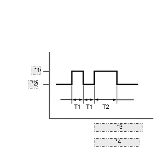
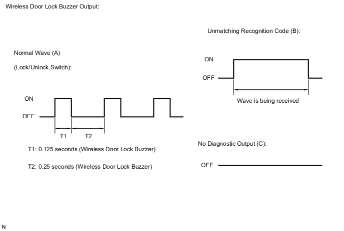

DESCRIPTION
The main body ECU (multiplex network body ECU) stores DTCs when malfunctions occur.
The diagnostic system allows for reading of the DTCs from the DLC3.
Use the GTS to check for malfunctions and perform repairs.
CHECK DLC3
Check the DLC3.
INSPECT AUXILIARY BATTERY VOLTAGE
Check the auxiliary battery voltage with the power switch off.
If the voltage is below 11 V, recharge or replace the auxiliary battery.
SELF-DIAGNOSTIC MODE (USING GTS)
Connect the GTS to the DLC3.
Turn the power switch on (IG).
Turn the GTS on.
Enter the following menus: Body Electrical / Entry&Start / Utility / Wireless Door Lock Diagnosis Mode.
| Tester Display |
|---|
| Wireless Door Lock Diagnosis Mode |
Proceed to the next step in accordance with the prompts on the GTS screen.

| *1 | ON |
| *2 | OFF |
| *3 | T1: 0.125 seconds |
| *4 | T2: 0.25 seconds |
Check that the system has switched to self-diagnostic mode by checking the wireless door lock buzzer output pattern.
Check the diagnostic output when an electrical key transmitter sub-assembly switch is pressed. The diagnostic outputs can be checked by the interior light blinking pattern and wireless door lock buzzer pattern.

| Wireless Door Lock Buzzer Output | Suspected Area |
|---|---|
| A | Normal (No malfunction) |
| B | Register electrical key transmitter sub-assembly |
| C | Wave interference or malfunction of a related component |